DiscreteMarkovChain¶
(Source code, png, hires.png, pdf)
{kind=link}
{kind=link}
-
class
DiscreteMarkovChain(*args)¶ Discrete Markov chain process.
- Parameters
- origin
Distributionor 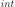, optional Probability distribution of the Markov chain origin, i.e. state of the process at 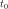. By default, the origin is set to a Dirac distribution of value 0.0.
- transitionMatrix
SquareMatrix, optional Transition matrix of the process. The matrix must be square, of dimension equal to the number of possible states of the process. By default, the transition matrix of the process is set to the 1x1 matrix [1].
- timeGrid
TimeSeries, optional The time grid of the process. By default, the time grid is reduced to one time stamp equal to 0.
- origin
Notes
A discrete Markov chain is a process 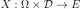, where 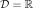 discretized on the time grid 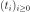, and 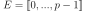 is the space of states, such that:
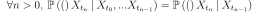
The transition matrix of the process 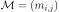 can be defined such that:
The transition matrix
 of the process is square, and its dimension
of the process is square, and its dimension  is equal to the number of states of the process. Besides, is a stochastic matrix, i.e.:
is equal to the number of states of the process. Besides, is a stochastic matrix, i.e.: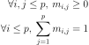
The origin of the process must be provided either as a deterministic value 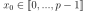, or as a probability distribution. In this case, the distribution of
 must be 1D, and its support must be a part of 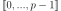.
must be 1D, and its support must be a part of 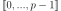.Examples
Create a Markov chain:
>>> import openturns as ot >>> timeGrid = ot.RegularGrid(0, 0.1, 10) >>> transitionMatrix = ot.SquareMatrix([[0.9,0.05,0.05],[0.7,0.0,0.3],[0.8,0.0,0.2]]) >>> origin = 0 >>> myMarkovChain = ot.DiscreteMarkovChain(origin, transitionMatrix, timeGrid)
Get a realization:
>>> myReal = myMarkovChain.getRealization()
- Attributes
thisownThe membership flag
Methods
Accessor to the object’s name.
Get a continuous realization.
Accessor to the covariance model.
Get the description of the process.
getFuture(*args)Prediction of the
 future iterations of the process.
future iterations of the process.getId()Accessor to the object’s id.
Get the dimension of the domain
 .
.getMarginal(*args)Get the
 marginal of the random process.
marginal of the random process.getMesh()Get the mesh.
getName()Accessor to the object’s name.
Accessor to the origin.
Get the dimension of the domain
.Get a realization of the process.
getSample(size)Get
 realizations of the process.
realizations of the process.Accessor to the object’s shadowed id.
Get the time grid of observation of the process.
Accessor to the transition matrix.
getTrend()Accessor to the trend.
Accessor to the object’s visibility state.
hasName()Test if the object is named.
Test if the object has a distinguishable name.
Test whether the process is composite or not.
isNormal()Test whether the process is normal or not.
Test whether the process is stationary or not.
setDescription(description)Set the description of the process.
setMesh(mesh)Set the mesh.
setName(name)Accessor to the object’s name.
setOrigin(*args)Accessor to the origin.
setShadowedId(id)Accessor to the object’s shadowed id.
setTimeGrid(timeGrid)Set the time grid of observation of the process.
setTransitionMatrix(transitionMatrix)Accessor to the transition matrix.
setVisibility(visible)Accessor to the object’s visibility state.
-
__init__(*args)¶ Initialize self. See help(type(self)) for accurate signature.
-
getClassName()¶ Accessor to the object’s name.
- Returns
- class_namestr
The object class name (object.__class__.__name__).
-
getContinuousRealization()¶ Get a continuous realization.
- Returns
- realization
Function According to the process, the continuous realizations are built:
either using a dedicated functional model if it exists: e.g. a functional basis process.
or using an interpolation from a discrete realization of the process on
: in dimension  , a linear interpolation and in
dimension
, a linear interpolation and in
dimension  , a piecewise constant function (the value at a
given position is equal to the value at the nearest vertex of the mesh of
the process).
, a piecewise constant function (the value at a
given position is equal to the value at the nearest vertex of the mesh of
the process).
- realization
-
getCovarianceModel()¶ Accessor to the covariance model.
- Returns
- cov_model
CovarianceModel Covariance model, if any.
- cov_model
-
getDescription()¶ Get the description of the process.
- Returns
- description
Description Description of the process.
- description
-
getFuture(*args)¶ Prediction of the
future iterations of the process.- Parameters
- stepNumberint,

Number of future steps.
- sizeint,
 , optional
, optional Number of futures needed. Default is 1.
- stepNumberint,
- Returns
- prediction
ProcessSampleorTimeSeries - future iterations of the process.
If
 , prediction is a
, prediction is a TimeSeries. Otherwise, it is aProcessSample.
- prediction
-
getId()¶ Accessor to the object’s id.
- Returns
- idint
Internal unique identifier.
-
getInputDimension()¶ Get the dimension of the domain
.- Returns
- nint
Dimension of the domain
: .
-
getMarginal(*args)¶ Get the
marginal of the random process.- Parameters
- kint or list of ints 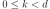
Index of the marginal(s) needed.
- Returns
- marginals
Process Process defined with marginal(s) of the random process.
- marginals
-
getName()¶ Accessor to the object’s name.
- Returns
- namestr
The name of the object.
-
getOrigin()¶ Accessor to the origin.
- Returns
- origin
Distribution The probability distribution of the origin of the Markov chain.
- origin
-
getOutputDimension()¶ Get the dimension of the domain
.- Returns
- dint
Dimension of the domain
.
-
getRealization()¶ Get a realization of the process.
- Returns
- realization
Field Contains a mesh over which the process is discretized and the values of the process at the vertices of the mesh.
- realization
-
getSample(size)¶ Get
realizations of the process.- Parameters
- nint,

Number of realizations of the process needed.
- nint,
- Returns
- processSample
ProcessSample - realizations of the random process. A process sample is a
collection of fields which share the same mesh
 .
.
- processSample
-
getShadowedId()¶ Accessor to the object’s shadowed id.
- Returns
- idint
Internal unique identifier.
-
getTimeGrid()¶ Get the time grid of observation of the process.
- Returns
- timeGrid
RegularGrid Time grid of a process when the mesh associated to the process can be interpreted as a
RegularGrid. We check if the vertices of the mesh are scalar and are regularly spaced in but we don’t check if the connectivity of the mesh is conform
to the one of a regular grid (without any hole and composed of ordered
instants).
but we don’t check if the connectivity of the mesh is conform
to the one of a regular grid (without any hole and composed of ordered
instants).
- timeGrid
-
getTransitionMatrix()¶ Accessor to the transition matrix.
- Returns
- matrix
SquareMatrix The transition matrix of the process, of dimension
.
- matrix
-
getTrend()¶ Accessor to the trend.
- Returns
- trend
TrendTransform Trend, if any.
- trend
-
getVisibility()¶ Accessor to the object’s visibility state.
- Returns
- visiblebool
Visibility flag.
-
hasName()¶ Test if the object is named.
- Returns
- hasNamebool
True if the name is not empty.
-
hasVisibleName()¶ Test if the object has a distinguishable name.
- Returns
- hasVisibleNamebool
True if the name is not empty and not the default one.
-
isComposite()¶ Test whether the process is composite or not.
- Returns
- isCompositebool
True if the process is composite (built upon a function and a process).
-
isNormal()¶ Test whether the process is normal or not.
- Returns
- isNormalbool
True if the process is normal.
Notes
A stochastic process is normal if all its finite dimensional joint distributions are normal, which means that for all
 and
and
 , with
, with  , there is
, there is
 and
and
 such that:
such that:
where
 ,
,
 and
and
 and
and
 is the symmetric matrix:
is the symmetric matrix:
A Gaussian process is entirely defined by its mean function
 and its
covariance function
and its
covariance function  (or correlation function
(or correlation function  ).
).
-
isStationary()¶ Test whether the process is stationary or not.
- Returns
- isStationarybool
True if the process is stationary.
Notes
A process
 is stationary if its distribution is invariant by
translation:
is stationary if its distribution is invariant by
translation:  ,
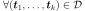,
,
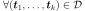,
 , we have:
, we have:
-
setDescription(description)¶ Set the description of the process.
- Parameters
- descriptionsequence of str
Description of the process.
-
setName(name)¶ Accessor to the object’s name.
- Parameters
- namestr
The name of the object.
-
setOrigin(*args)¶ Accessor to the origin.
- Parameters
- origin
Distributionor The probability distribution of the origin of the Markov chain.
- origin
-
setShadowedId(id)¶ Accessor to the object’s shadowed id.
- Parameters
- idint
Internal unique identifier.
-
setTimeGrid(timeGrid)¶ Set the time grid of observation of the process.
- Returns
- timeGrid
RegularGrid Time grid of observation of the process when the mesh associated to the process can be interpreted as a
RegularGrid. We check if the vertices of the mesh are scalar and are regularly spaced in but we don’t check if the connectivity of the mesh is conform
to the one of a regular grid (without any hole and composed of ordered
instants).
- timeGrid
-
setTransitionMatrix(transitionMatrix)¶ Accessor to the transition matrix.
- Parameters
- matrix
SquareMatrix The transition matrix of the process, of dimension
.
- matrix
-
setVisibility(visible)¶ Accessor to the object’s visibility state.
- Parameters
- visiblebool
Visibility flag.
-
thisown¶ The membership flag